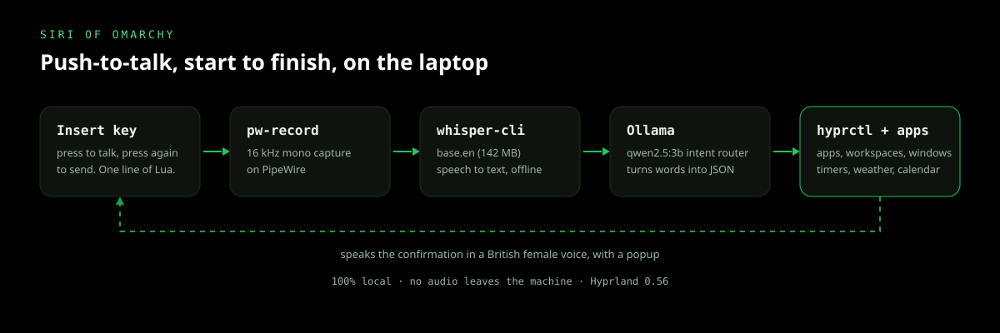

Siri of Omarchy
Offline push-to-talk voice assistant for Hyprland. Built 2026. Sole builder.
- Python
- Bash
- whisper.cpp
- Ollama
- PipeWire
- Hyprland

What it does
Press Insert, say the thing, press Insert again. She records 16 kHz mono audio, transcribes it locally with whisper, turns the sentence into JSON with a local qwen2.5:3b model, and then does it: launches apps, switches workspaces, moves windows, reads the weather, sets timers and reminders, reads my merged iCloud calendars, and works the system controls. Every action is confirmed out loud in a British female voice.
There is no API key, no cloud round trip, and no account. The microphone stream is written to a temp file, transcribed, and deleted; no audio leaves the machine.
How it works
bin/local-voicetoggles a detachedpw-recordprocess, so the key press returns instantly instead of blocking the session.whisper-cliruns thebase.enmodel (142 MB) over the recording, offline, on the CPU.bin/local-voice-execsends the transcript to Ollama and gets back JSON: an action, plus the arguments it needs.- The router maps that JSON onto Hyprland 0.56's
hl.dsp.*calls throughhyprctl, or onto a plain app launch, calendar lookup, or timer. bin/local-voice-ttsspeaks the confirmation with Piper, mastered to 48 kHz / 24-bit so it does not sound like a robot in a can.
Desktop control
Beyond scripted actions, she can drive the desktop through hypruse. She reads the window tree and the named controls a window exposes, so "click Save" finds Save by name instead of guessing pixel coordinates. That covers clicks, scrolling, key combinations, typing and pressing Enter, and opening an app on a named workspace, all over the same Wayland protocols as wlrctl, with no root, no ydotool, and no portals.
Computer use is where a voice assistant stops being cute, so it is fenced in: locked sessions, password fields, and system authentication dialogs always refuse, and the auth flag is never passed. Shutdown, reboot, and logout require a spoken "yes" before they run, and the router rejects destructive shell and file output outright. A panic key (Super+Shift+Backspace) kills any in-flight click or keystroke, HYPRUSE_DRYRUN=1 rehearses without touching anything, and HYPRUSE_JOURNAL=1 writes an audit log.
Hardest problems
The first was the voice stack on a laptop with no GPU. The stock coqui-tts install hard-fails on newer Python because its torchcodec dependency links CUDA libraries, even though XTTS inference only needs librosa and soundfile. Rather than fight the dependency, I wrote patches/apply-patches.py to skip the torchcodec import, shim a removed isin_mps_friendly helper, and fall back to soundfile when loading audio. The script is idempotent and skips cleanly when the patches are not needed, so a re-run never breaks a working install. I then moved the everyday voice to Piper, which answers in well under a second.
The second was picking the voice. Instead of trusting a demo page, I compared median pitch and range across Piper's British female voices on identical text against a recording of my own voice, and the southern English one won. It sounds like a person agreeing with me rather than a screen reader reading a log.
Privacy
The repository blocks recordings, models, calendar configuration, tokens, caches, and runtime state from git. Calendar share links stay on disk with owner-only permissions. The installer links scripts into ~/.local/bin, downloads models on demand, and never overwrites an existing configuration.
Outcome
This is the assistant I actually talk to every day on my Arch daily driver. Dictating a timer, asking what is on my calendar for tomorrow, or parking a window on workspace 3 takes one key and one sentence, and nothing about my voice or my schedule leaves the laptop.
Links
Public, MIT-licensed, and installed with ./install.sh. Needs Hyprland 0.56+, whisper-cli, Ollama, PipeWire, ffmpeg, and Python 3.10+.